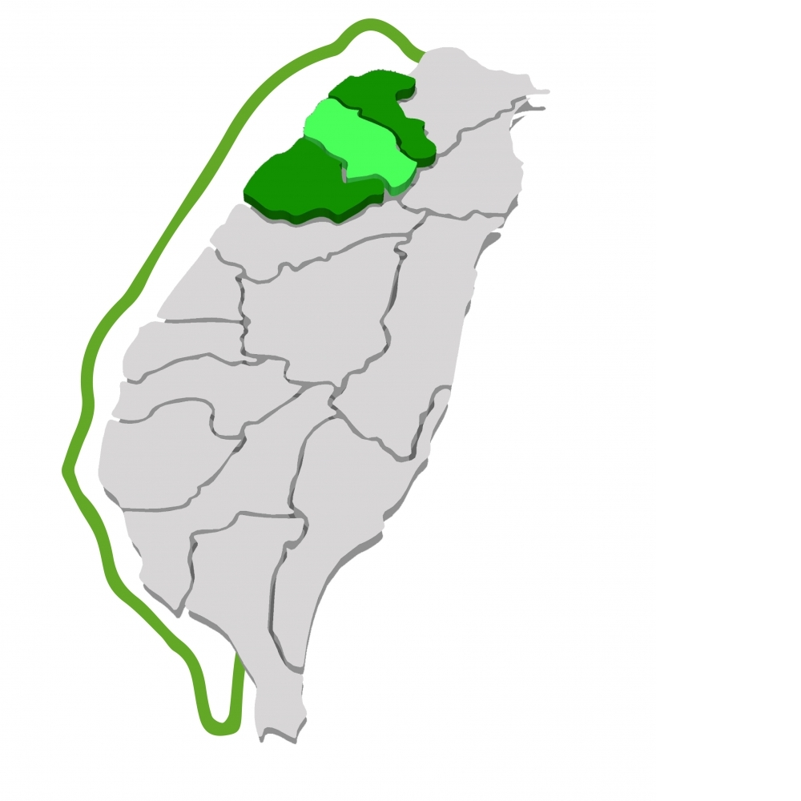
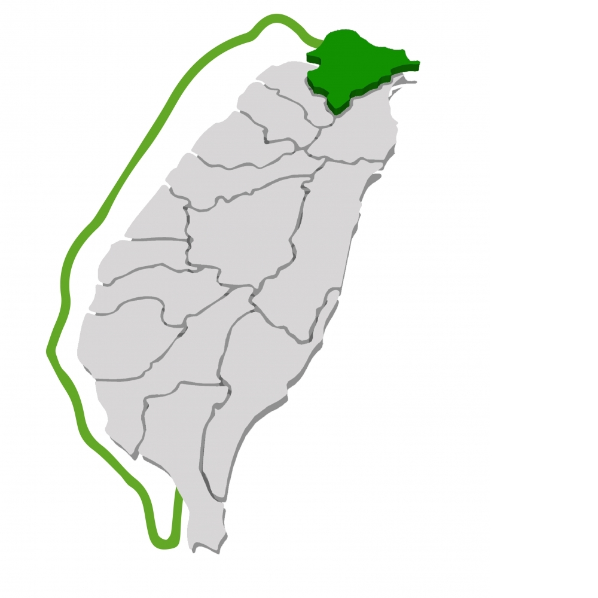
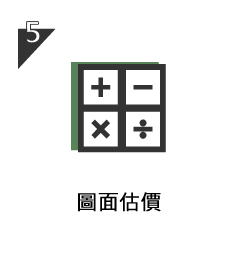
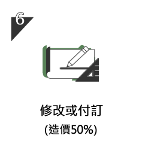

高高屏
場勘費用NT$2000元
先確認進出道路、吊卸位置及基地條件，再一起討論空間規畫。
場勘費用NT$2000元

場勘費用NT$3000元

場勘費用NT$2500元

場勘費用NT$3500元

場勘費用NT$4000元

場勘費用NT$4000元

場勘費用NT$6000元
以上為官網刊載費用，申請前請聯絡確認。依官網運輸 FAQ：若基地可進入，場勘費可自後續貨款扣除；無法進入時，費用作為差勤成本。

先聊聊用途、基地與希望的生活方式。

確認道路、吊卸及現場條件。
整合使用需求與格局配置。

核對空間、尺寸與設備安排。

依確認的圖面計算施作費用。

官網流程列示訂金為造價 50%。

確認排程，安排生產與施工。

完成現場交付與確認。

官網流程列示交屋後 7 日內付清。
付款條件依官網購買流程整理，實際以雙方確認的報價及合約為準。
場勘費用NT$6000元。此為官網刊載金額，申請前請再次確認。
官網原始資料 ↗場勘費用NT$4000元。此為官網刊載金額，申請前請再次確認。
官網原始資料 ↗場勘費用NT$4000元。此為官網刊載金額，申請前請再次確認。
官網原始資料 ↗場勘費用NT$3500元。此為官網刊載金額，申請前請再次確認。
官網原始資料 ↗場勘費用NT$2500元。此為官網刊載金額，申請前請再次確認。
官網原始資料 ↗場勘費用NT$3000元。此為官網刊載金額，申請前請再次確認。
官網原始資料 ↗場勘費用NT$2000元。此為官網刊載金額，申請前請再次確認。
官網原始資料 ↗